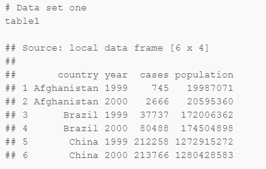
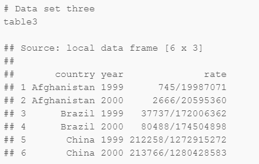
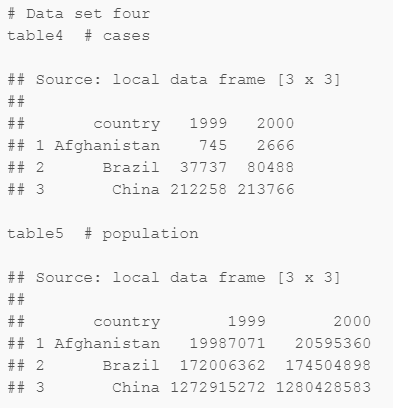

Introducción a la Ciencia de Datos
Sesión 2 Importación, limpieza y proceso de datos
Ismael Gómez Schmidt @ismaelgomezs
Data Scientist
Contenido de Sesión 2

Importación de datos en R Studio
Concepto de Tidy Data
Criterios y ejemplos de uso de librerías/funciones para proceso de datos en R Studio
El proceso de datos lo separaremos en 3 etapas:
revisión, limpieza/extracción y creación/transformación
Importando .CSV
Usaremos el archivo CSV con los datos de clasificatorias mundialistas Conmebol entre 1998 y 2014 como ejemplo. Descargar acá.
data <- read.csv(file='clasif_conmebol_9814.csv', header=T, stringsAsFactors=F, encoding='utf8')
No olvidar incluir correctamente la ruta del archivo. Se sugiere tenerlo en el mismo
Work Directory.En
Helpo con "?Nombrefuncion" es posible ver los detalles de cada función.
Funciones básicas para Revisión
names(data) # Para ver los nombres de las columnas
str(data) # Para ver el tipo o la clase del objeto y de sus atributos
dim(data) # Para ver las dimensiones de la tabla (filas y columnas)
head(data) # Para ver las primeras X filas del objeto
tail(data) # Para ver las últimas X filas del objeto
El operador
$nos permite elegir una columna específica por su nombre. Ejemplo:data$EquipoTambién se pueden seleccionar filas y columnas específicas con la notación que utiliza
[],:,-yc().Ejemplo 1: Cambiar nombre de columnas
Ejemplo 2: Crear nuevos atributos
Importando .TXT
Usaremos el archivo TXT con datos de IMDB acerca de películas. Descargar acá.
data2 <- read.table('movies.txt', header=TRUE)
Ejemplo 3: Cómo subseleccionar o filtrar datos específicos:
&,|,==Ejemplo 4: Ordenar datos según valores de atributos con función
order()
Importando .XLS o .XLSX
Usaremos un archivo XLSX con datos de mediciones de ruido de fondo diurnas y nocturnas en sectores rurales del sur de Chile. Descargar acá.
Para importar este tipo de archivos es necesario instalar y cargar una librería específica:
#install.packages('readxl')
library(readxl)
data3_h1 <- read_excel('datos_ruido_y_viento.xlsx', sheet=1)
data3_h2 <- read_excel('datos_ruido_y_viento.xlsx', sheet=2)
# Probar parámetros "skip", "n_max" y "range"
Ejemplo 5: Completar datos de columna Proyecto
Ejemplo 6: Uso de funciones
summary()ytable()
Otras librerías
openxlsxes otra para .XLSX (buen rendmiento para archivos grandes)pdftoolsytabulizerpara .PDFforeignpara .DBF y otras bases de datosRSQLitepara conectarse a databasesqpcRpara .HTML y .XML
Librería devtools
Permite importar librerías no oficiales de CRAN desde otras fuentes, como por ejemplo Github.
Son desarrolladas por la comunidad y
muchas veces son sumamente útiles.
#install.packages('devtools')
library(devtools)
#install_github("DeveloperName/PackageName")
Más funciones para Revisión
nrow(data); ncol(data) # Número de filas y número de columnas
length(data) # Largo de un vector o elemento
nchar(data[1,1]) # Número de caracteres de un elemento
Ejemplo 7: Obtener la cantidad de
casos completosy deNAde algún atributo. Funcionescomplete.cases()&is.na()Ejemplo 8: Obtener los valores o nombres únicos de algún atributo. Función
unique()
Funciones para Limpieza de datos
Limpieza de texto (1)
substr(data3_h1$hora, 12, 19) # Seleccionar caracteres específicos de un string
gsub('Vivienda', 'Edificación', data3_h1[, 3]) # Reemplazar texto por otro texto
grep('', data) # Para encontrar string que cumplen una regex
#(como el gsub pero sin reemplazar)
tolower(data) # Convertir todo a minúsculas
toupper(data) # Convertir todo a mayúsculas
trimws(data) # Para borrar espacios
Para aprender más de expresiones regulares en R ir acá
Ejemplo 9: Extraer la cantidad de pisos de las edificaciones
Ejemplo 10: Buscar todas las películas que tienen la palabra 'time' en su nombre o título
Funciones para Limpieza de datos
Limpieza de texto (2)
library(stringr) # Para más funciones
library(stringdist) # Para búsqueda por similitud, match de textos.
# La función 'amatch()' es muy útil
paste() # Para concatenar caracteres
formatC('') # Para setear strings con longitud fija. Ej: Días con dos dígitos.
Funciones para Limpieza de datos
Filtrar y/o subseleccionar
which(data>0) # Para obtener la ubicación (fila, índice, etc.) de los datos que cumplen
# uno o más criterios. También se usa which.max() y which.min()
library(dplyr)
subset(data, Pts > mean(Pts) & Pos.>=5, select=c(Equipo, Pts, Pos., Clasif))
# Para subseleccionar filas según algún criterio y las columnas específicas
filter(data) # Para filtrar por múltiples criterios
# bonus de la librería:
arrange(data) # Para ordenar los datos según varios niveles, parámetro desc() para descendente
mutate(data) # Para crear nuevos atributos
- Ejemplo 11: Crear un nuevo data frame que contenga únicamente las películas desde la década del 90 en adelante y que tengan un rating mayor a la mediana del mismo, sin incluir los atributos 'r'. Luego ordenarlas por año y ranking, de manera descendente.
Funciones para Transformación de datos
Convertir tipos de variables u objetos
as.numeric() # Para convertir a variable numérica
as.character() # Para convertir a caracter
as.data.frame(data) # Para convertir a data frame
as.factor(data$Equipo) # Para convertir a factor (variable categórica)
### as.Date # Para convertir a objeto de Fecha
# Sys.time()
# Sys.Date()
# Sys.timezone() # Chile/Continental
Ejemplo 12: Asumir que todas las películas se crearon el primero de enero del año indicado para crear una nueva variable fecha con el formato '%Y-%m-%d' (para ver detalles de formatos acá)
Ejemplo 13: Calcular cuántas mediciones se hicieron en días de semana (lun-vier) y cuántas en días de fin de semana (diurnas y nocturnas). Función
weekdays().
Funciones para Transformación de datos
Más Fechas!!
library(lubridate)
#year()
#month()
#day()
library(zoo)
#as.yearmon()
# Sys.getlocale("LC_TIME")
# Sys.setlocale("LC_TIME", "English")
Tidy Data
Tidy data
Se trata de criterios de estructuración de datasets tabulares para facilitar su proceso y análisis. Propuesto por Hadley Wickham, el gurú de R. Acá el paper.
Las reglas son:
1) Cada atributo o variable debe formar una columna
2) Cada observación, muestra o ejemplo debe formar una fila
3) Cada tipo de "unidad de observación" debe formar una sola tabla.
4)* Cada valor debe estar en su propia celda
Tidy data
 
 
Tidy data
La tabla 1 es la única que cumple los criterios
Más funciones para Transformación de datos
cbind()yrbind()# Para unir columnas y filas de distintos elementosmerge()# Para hacerjoinsde bases de datos relacionalescut()# Para segmentar una variable numérica en categoríasrep()# Para definir repitición patronesseq()# Para crear secuenciasapply()# Para aplicar una función a columnas y filas específicas de un elementoreshape()# Para convertir filas en columnas y viceversa. Formato ancho o largolibrary(data.table)# Muchas utilidades
Ejemplo 14: Unir las mediciones diurnas y nocturnas en un solo data frame
Ejemplo 15: Descargar los datos de sobrevivientes del Titanic acá para luego crear grupos de edades de los pasajeros con intervalos cada 10 años.
Programación tradicional
Sentencias if
if(1>0)
{
}
# if.else()
Programación tradicional
Ciclos for
for (i in 1:10)
{
}
Bonus track: scraping de .HTML "simple"
#install.packages('rvest')
library(rvest)
- Ejemplo 16: Usar al menos una sentencia
ify un cicloforpara scrapear las tablas de posiciones de las fases de grupos de Copa Libertadores entre 2011 y 2017 desde el sitio web de ESPN
Programación tradicional
Funciones propias
mi_funcion <- function(input1=0, input2=0)
{
salida <- input1 + input2
salida
}
Exportación a .CSV
# write.csv(data, 'data.csv', row.names=F)
# remove()